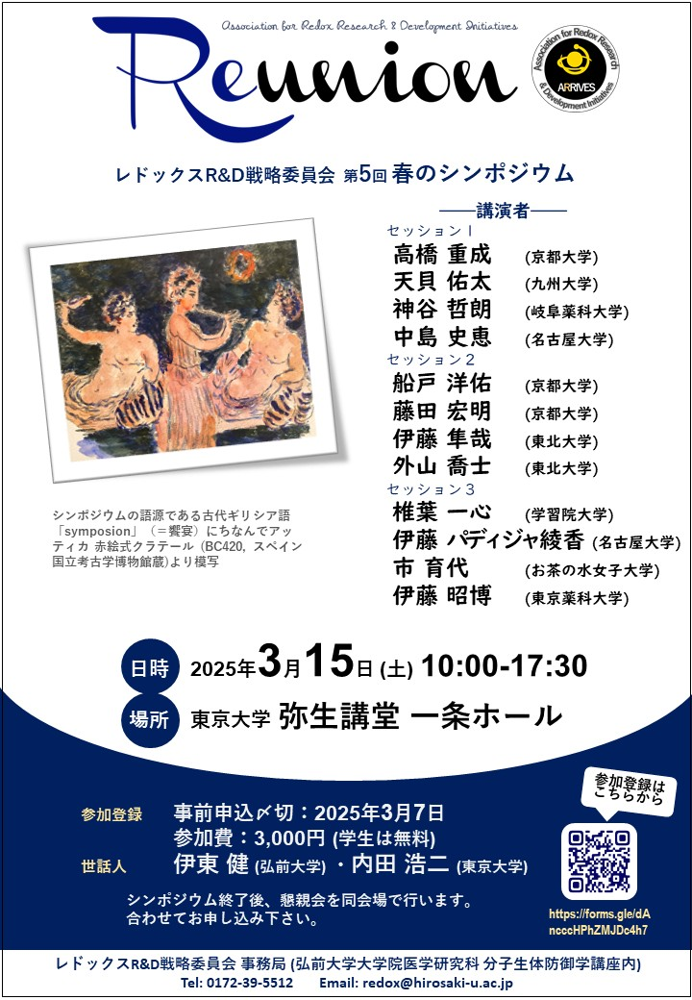
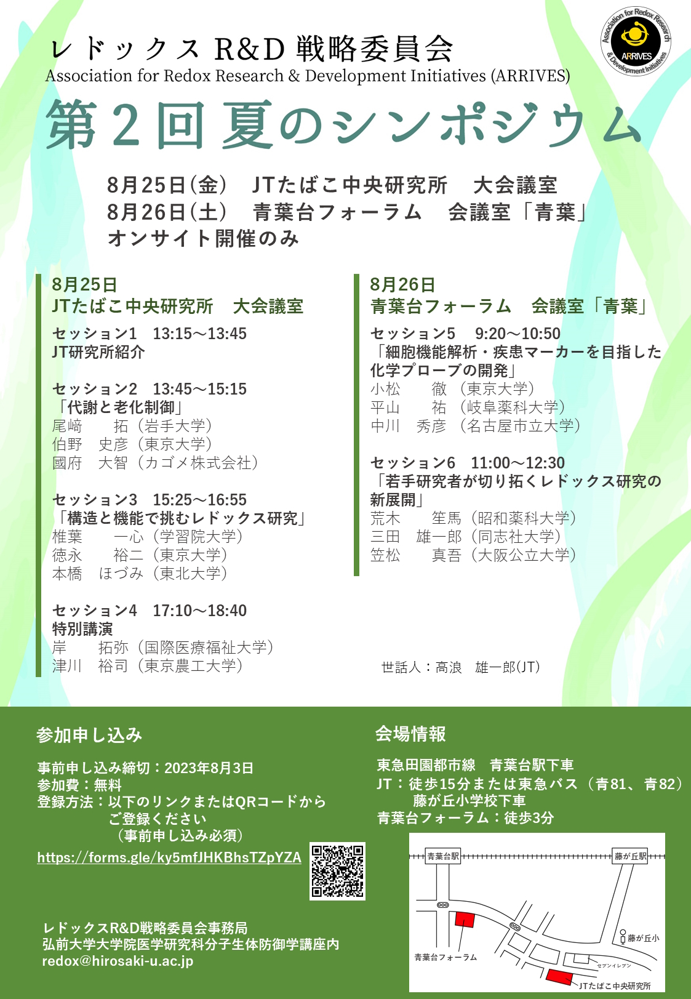
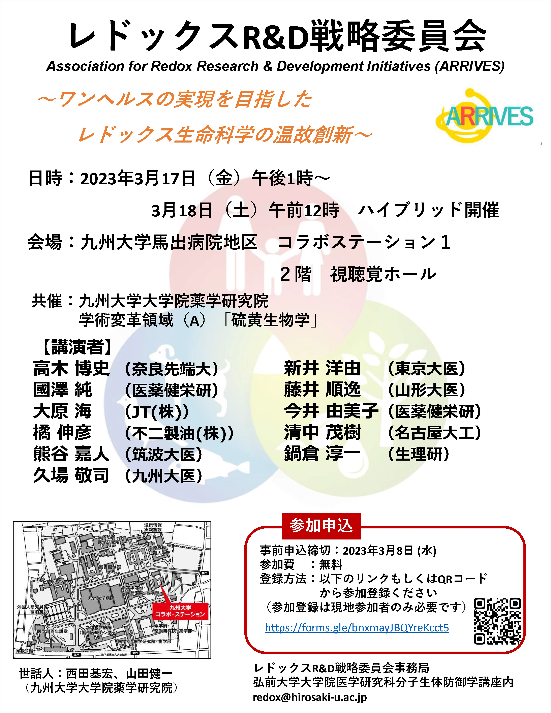
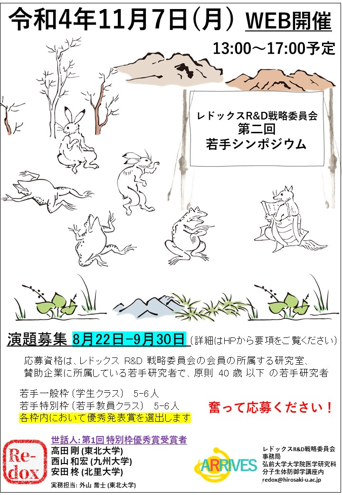
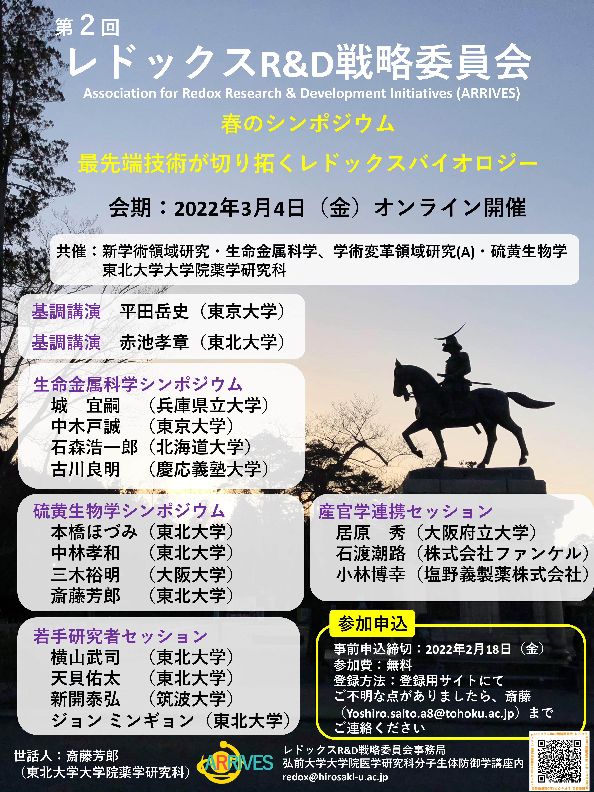

お知らせ
ウェブサイトを移転しました 
新しいウェブサイトのURL
https://sites.google.com/view/redoxrd-toppage/%E3%83%9B%E3%83%BC%E3%83%A0?authuser=1
第7回 総会を開催しました
第7回 総会
日 時：令和7年4月23日 (水) 18:00~19:00
場 所：オンライン（Zoom）
春のシンポジウムを開催しました
第5回 春のシンポジウム「リユニオン」
日 時：令和7年3月15日 (土) 10:00~17:30
場 所：東京大学 弥生講堂一条ホール
世話人： 伊東 健（弘前大学大学院 医学研究科）
内田 浩二（東京大学大学院 農学研究科）
事前参加登録はこちら

共催シンポジウムを開催しました
アンチエイジング研究シンポジウム「健康・病態研究への新しいアプローチ」
共催：レドックスR&D 戦略委員会，フォーデイズ株式会社
後援：公益財団法人日本農芸化学会
日 時：令和6年10月25日（金）・26日（土）
場 所：東京大学農学部 フードサイエンス棟 中島董一郎記念ホール
世話人： 内田 浩二（東京大学大学院農学生命科学研究科）
プログラムはこちら
事前参加登録はこちら 

第６回 講演会を開催しました
褐色脂肪組織と酸化ストレス、インスリン感受性
講師：米代 武司 先生（東北大学 大学院医学系研究科 細胞生物学講座 分子代謝生理学分野）
主催：弘前大学医学研究科バイオメディカルリサーチセンター（BMRC)
共催：レドックスR&D 戦略委員会，弘前大学健康未来イノベーション研究機構
日 時：令和6年8月30日（金）17:00~18:15
場 所：オンライン（ZOOM）

第3回 夏のシンポジウムを開催しました
第3回 夏のシンポジウム
日 時：令和6年8月23日（金）
場 所：大阪府泉佐野市（不二製油社内）
世話人： 太田 聡（不二製油グループ本社株式会社）
プログラムはこちら
第６回 総会を開催しました
第６回 総会
日 時：令和６年４月２６日（金）18時00分～19時00分
場 所：オンライン（Zoom）
春のシンポジウムを開催しました
第４回 春のシンポジウム
多様な脂質分子とレドックス研究の接点
日 時：令和6年3月15日（金），16日（土）
場 所：北里大学薬学部 大村記念ホール（ハイブリッド開催）
世話人：今井 浩孝（北里大薬），山田 健一（九州大院薬）
共催 ：北里大学薬学部, 学術変革領域(A)「硫黄生物学」
プログラム

夏のシンポジウムを開催しました
第2回 夏のシンポジウム
日 時：令和５年８月２５日（金）・２６日（土）
場 所：JTたばこ中央研究所 大会議室（8月25日）
青葉台フォーラム 会議室「青葉」（8月26日）
世話人：高浪 雄一郎(JT)

特別セミナーを開催しました
特別講セミナー
「エピジェネティクスを介した老化制御と、老化を標的としたバイオテックの動向」
講師：早野 元詞 先生（慶應義塾大学 医学部）
日時：6月22日（木）17 時 00 分から
場所：オンライン
特別講義を開催しました
特別講義
「Glyco-Redox：酸化ストレスと糖鎖の研究から学んだこと」
講師：谷口 直之 先生（大阪国際がんセンター研究所・大阪大学名誉教授）
日時：5月31日（水）18 時 00 分から
場所：オンライン
第5回 総会 を開催しました
第5回 総会
日時：4月20日（木）18 時 00 分から
場所：オンライン
第３回 春のシンポジウムを開催しました
第３回 春のシンポジウム
「ワンヘルスの実現を目指したレドックス生命科学の温故創新」
日時： 令和５年3月17日（金）午後、18日（土）午前
場所： 九州大学馬出病院地区 コラボステーション１，2階 視聴覚ホール
世話人： 西田基宏，山田健一

第2回 若手シンポジウムを開催しました
第2回 若手シンポジウム
日時： 令和4年11月7日（月）13時00分～17時10分
場所： オンライン
世話人： 高田 剛 (東北大学)
西山 和宏 (九州大学)
安田 柊 (北里大学)
受賞者はこちら

Tohoku Forum for Creativity で開催されるシンポジウムを共催しました
Redox Week in Sendai 2022の関連イベントとして、11月1日にTohoku Forum of Creativityが仙台にて開催されました。
この午後のセッションをレドックスR&D戦略委員会が共催しました。
Tohoku Forum for Creativity, Thematic Program
“Evolving and Emerging Redox Biology and Bioenergetics for Medicine and Human Health”
日時： 令和4年11月1日（火）13時00分～16時30分
プログラムはこちら
企画シンポジウムを開催しました 
第3回 企画シンポジウム
「ホルミシスおよび気道環境ストレスに対する生体の防御機構」
日時： 令和4年9月27日（火）13時00分～17時00分
場所： オンライン
企画： 日本たばこ産業株式会社
プログラムはこちら
夏のシンポジウムを開催しました
第１回 夏のシンポジウム
日 時：令和４年 ８月１９日（金）
場 所：岩手大学 復興祈念銀河ホール & オンライン
世話人：伊東 健（弘前大学大学院医学研究科）
尾﨑 拓（岩手大学 理工学部）
プログラムはこちら

教育講演会を開催しました
教育講演会
日時： 令和4年8月6日（土）16時20分～18時20分
場所： 九州大学馬出病院地区 コラボステーションⅠ 2階 視聴覚ホール
（福岡県福岡市東区馬出3-1-1）
＆オンライン ハイブリッド開催
共催： 学術変革領域研究(A)・硫黄生物学
九州大学大学院薬学研究院
講演者： 松田 道行 先生（京都大学医学研究科）
住本 英樹 先生（九州大学大学院医学研究院）
世話人： 西田 基宏（九州大学大学院薬学研究院）

第2回 講演会を開催しました
A special lecture was held online on May 19, 2022 at 5:00 pm (JST) / 10:00 AM on May 19, 2022 (CEST) .
Lecturer: Dr. Evandro F. Fang (Molecular Gerontology at the University of Oslo)
Subject: Oxidative stress, mitochondrial homeostasis, and ageing
Participation: Members only
企画シンポジウムを開催しました
第２回 企画シンポジウム
「老化制御およびテロメア研究の新基軸」
日時： 令和4年5月13日（金）12時55分～16時05分
場所： オンライン（ZOOM会議）
参加資格： 会員限定
プログラムはこちら
第4回 総会 を開催しました
第4回 総会
日時：令和4年4月15日（金）18 時 00 分から
場所：オンライン
第2回 春のシンポジウムを開催しました
第2回 春のシンポジウム
「最先端技術が切り拓くレドックスバイオロジー」
日時：令和4年3月4日（金）9 時 55 分から 18 時 30 分
場所：オンライン
参加資格：会員限定
世話人：斎藤 芳郎（東北大学大学院薬学研究科）

第1回 若手シンポジウムを開催しました
第1回 若手シンポジウム
日時：令和3年11月8日（月）13 時 00 分から 18 時 30 分
場所：オンライン
参加資格：会員限定
世話人：澤 智裕（熊本大学）
プログラムはこちら
受賞者の発表はこちら
第1回 企画シンポジウムを開催しました
第1回 企画シンポジウム「翻訳・アミノ酸代謝調節による生体機能制御」
日時：令和3年8月20日（金）10時00 分 ～ 17 時30 分
場所：オンライン
参加資格：会員限定
世話人：伊東 健
プログラムはこちら
第1回 講演会を開催しました
第1回講演会「オートファジーとその関連分解システムのメカニズム」
講師：水島 昇（東京大学・大学院医学系研究科・分子生物学）
日時：令和3 年6 月10 日（木） 18 時00 分 ～ 19 時30 分
場所：オンライン
参加資格：会員限定
世話人：斎藤 芳郎
{kind=link}
第3回 総会を開催しました
令和3年4月22日（木）にオンラインで第3回 総会を開催しました。
シンポジウムを開催しました
令和3年３月４日（木）と５日（金）の二日間にわたり第一回レドックスR&D戦略委員会シンポジウムとサテライトシンポジウムをオンラインで開催しました。
皆様のご参加とご協力に心から感謝申し上げます。
シンポジウム特別企画のお知らせ
シンポジウム初日となる３月４日（木）のプログラムに先立ちまして、１２：５５に伊東会長から開会のご挨拶があります
また、同日のプログラム終了後、１８：３０から特別企画がございます
第１回レドックスR&D戦略委員会シンポジウム特別企画
「レドックス委員会の思い出」
スライドショー＆トーク＆「Fly me to the moon」by 熊谷嘉人
皆様のご参加を心よりお待ちしております
ウェブ版要旨集を公開しました
第１回 レドックスR&D戦略委員会シンポジウムの要旨集を公開しました
ウェブ版要旨集はこちらからご覧ください
シンポジウムの参加登録期間を延長しました
第１回 レドックスR&D戦略委員会シンポジウムの参加登録の締め切りを2月26日（金）に延長しました
参加をご希望の方は事務局までご連絡ください
令和２年12月25日
第１回 レドックスR&D戦略委員会シンポジウムのフライヤーが完成しました
公開シンポジウムとなっておりますので、お誘い合わせのうえご参加ください
フライヤーはこちら


令和２年10月26日
第2回 レドックスR&D戦略委員会総会をウェブ会議形式にて開催しました
第１回 レドックスR&D戦略委員会シンポジウムの日程が決定しました
第１回のシンポジウムを令和３年３月４日（木）～5日（金）の２日間にわたりオンラインで開催します
シンポジウムのテーマは「レドックスホメオスタシスと認知症・生活習慣病」とし、様々な角度からレドックスの意義を探求したいと思います
令和２年８月8日
社団法人 レドックスR&D戦略委員会を設立しました
令和２年８月７日
ウェブ会議形式にて第１回総会を開催しました